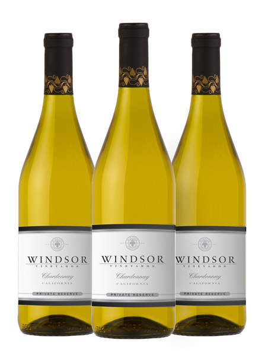
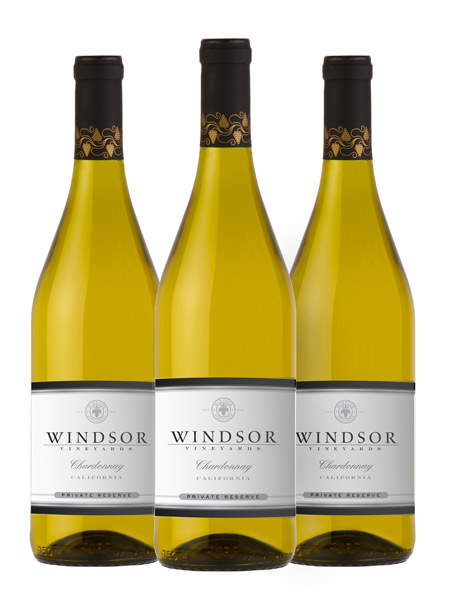
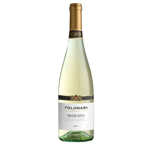
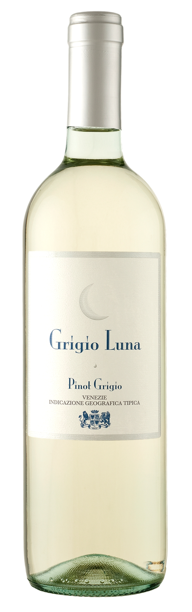
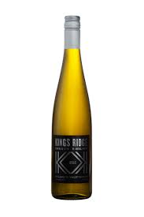
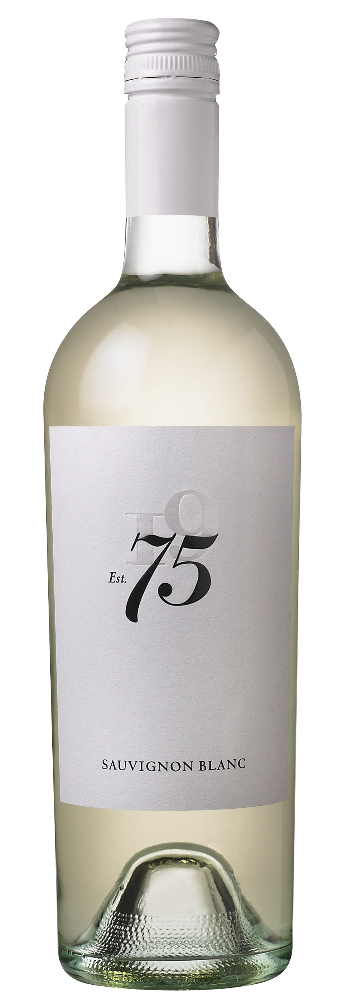

Chardonnay $18.99

Our Missouri grown chardonnay wine features the tastes of lemon, grapefruit and vanilla with a hint of melon. This wine pairs well with fish and chicken dishes.

Our Missouri grown chardonnay wine features the tastes of lemon, grapefruit and vanilla with a hint of melon. This wine pairs well with fish and chicken dishes.

This magnificent flavor of moscato is grown locally in the Ozarks and recognizable by it's sweet and fruity tastes. This wine pairs well with dessert dishes.

If you like your wine to have a bit of a 'bite to it', our pinot grigio is the one for you! The grapes are grown in northwest Aransas and produce a crisp taste that pairs well with seafood or any light meal (like pasta).

Tasting of fresh apples, this Riesling is grown in southwest Missouri and is an excellent wine to pair with fish, chicken and even pork chop dishes.

If you need the perfect wine to pair with your seafood, poultry or salad, look no further than this locally grown sauvignon blanc. This wine features an herbal taste with hints of sour apple, pears and also a touch of melon to provide the perfect wine for your taste buds.